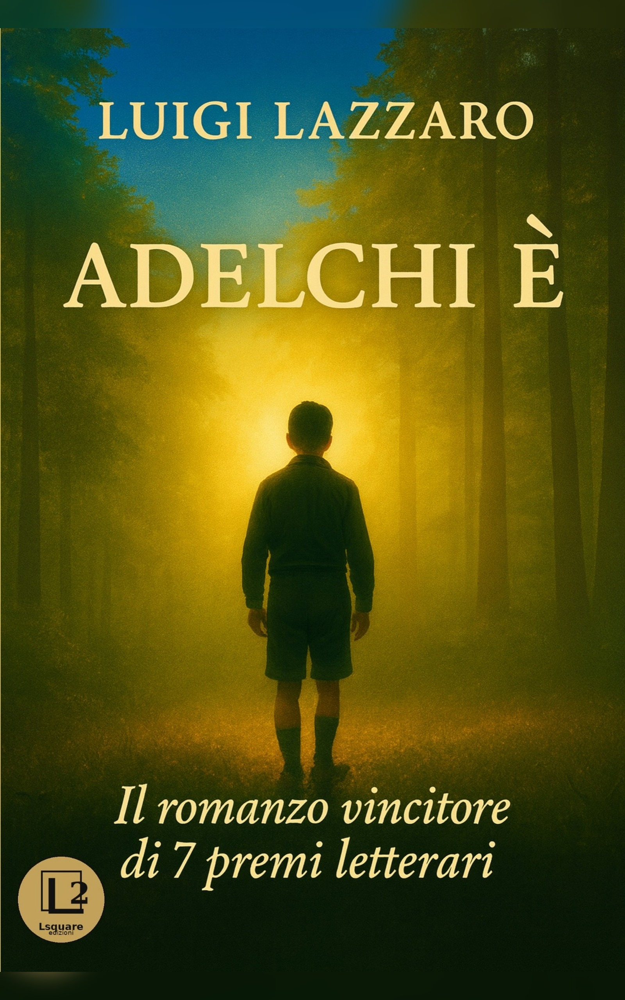

di Luigi Lazzaro
Il romanzo vincitore di 7 premi letterari
All’età di dodici anni Adelchi, sullo sfondo della Seconda guerra mondiale, è costretto a sfollare con la madre Rita dal nonno Arduino, a Faramonte, un piccolo paese dell’Appennino abruzzese. In un ambiente dominato dal sospetto e dalla paura, Adelchi deve imparare in fretta a orientarsi fra adulti che non dicono mai tutto e un mondo di regole non scritte.
“Mi ero aggregato all'unica torma di bambini del paese, di cui all'inizio non comprendevo neanche il dialetto. Tra di loro vigeva la cruda ferocia del branco e io capii subito che, se volevo sopravvivere, avrei dovuto cercarmi un’intelligente posizione di gregario, evitando, al contempo, pericolose commistioni con singoli elementi del gruppo”.
L’arrivo di Mirto Delmics, capo manipolo della milizia fascista, sconvolge la fragile quiete di Faramonte e soprattutto la vita di Adelchi e di sua madre. Nel paese c’è chi si adegua, chi chiude gli occhi, chi approfitta del nuovo clima di violenza. Saranno proprio gli emarginati – lo scemo del villaggio, l’ubriacone, la meretrice – a offrire al ragazzo uno sguardo diverso sul mondo e sugli adulti che lo circondano.
In due anni Adelchi è costretto a crescere, a scegliere da che parte stare e a fare i conti con la colpa e con la giustizia. Impara che bastano poche parole per cambiare la vita di qualcuno, e che nel microcosmo di Faramonte chi non appartiene al branco può diventare bersaglio, chiunque non stia alle loro regole.
“Quella sera avevo imparato una lezione di vita che mai più avrei dimenticato. Quei due poveri derelitti, inconsapevolmente, mi avevano insegnato a guardare oltre le apparenze, al di là del pregiudizio. […] Quella sera avevo aperto gli occhi su un mistero profondo ed essenziale, un faro che mi avrebbe guidato attraverso le circostanze della vita”.